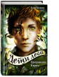

Превращение Карага

С виду Караг – обычный школьник. Но за ничем не примечательной внешностью прячется кое-кто необычный. Наполовину человек, наполовину пума – вот кто на самом деле этот загадочный парень. Жить среди людей такому, как он, не всегда просто. Но, к счастью, однажды Карагу выпадает шанс поступить в уникальное учебное заведение. "Кристалл" – школа, где учатся подростки, умеющие превращаться в зверей. Может быть, Карагу наконец удастся завести друзей? Однако кое-кто здесь уже следит за ним. Кто это? И почему он это делает? И значит ли это, что Карага ждут очень опасные испытания?